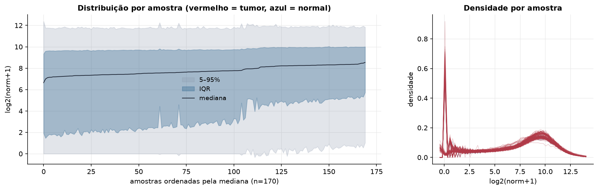
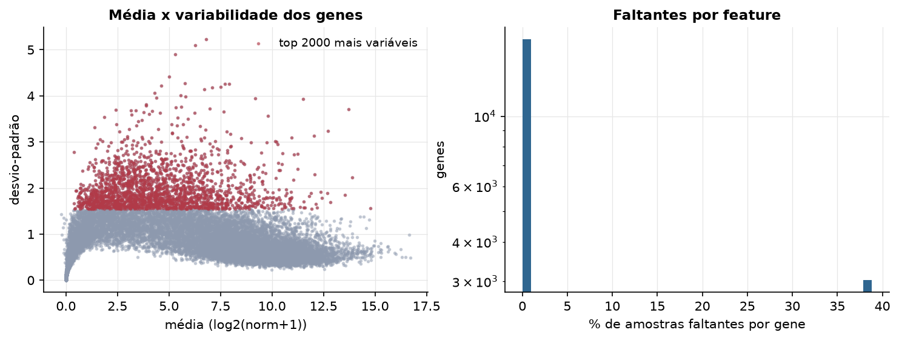
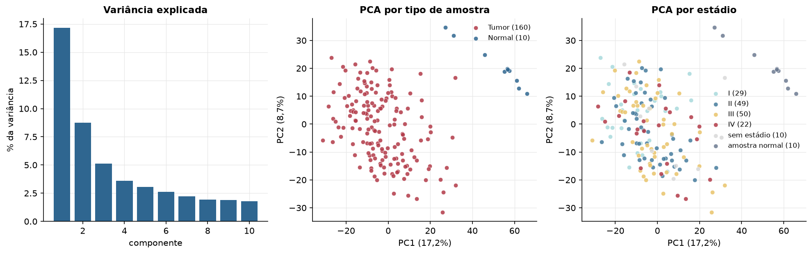
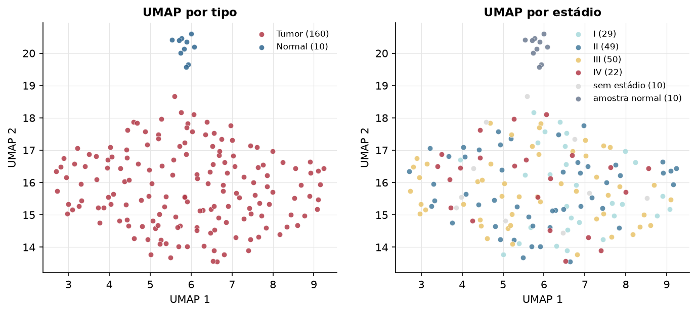
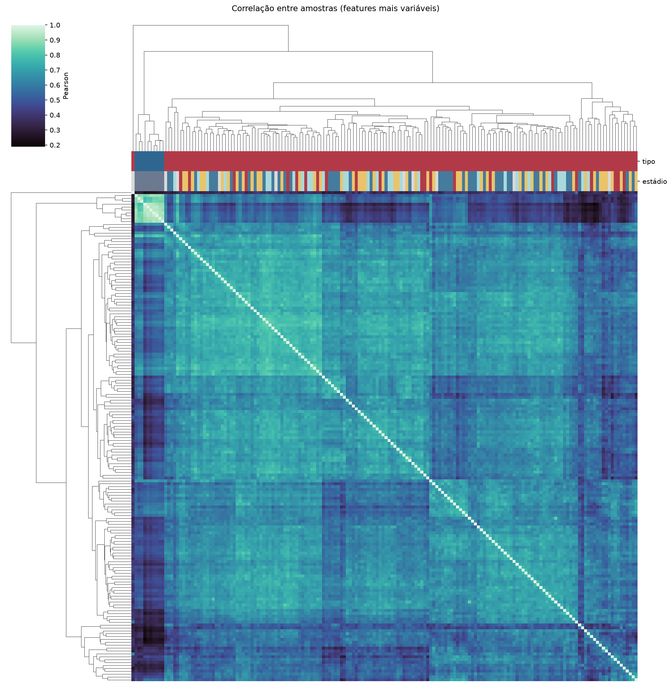
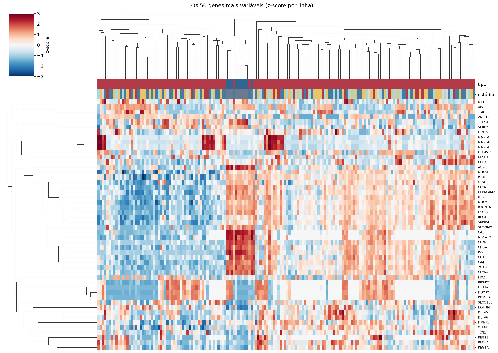
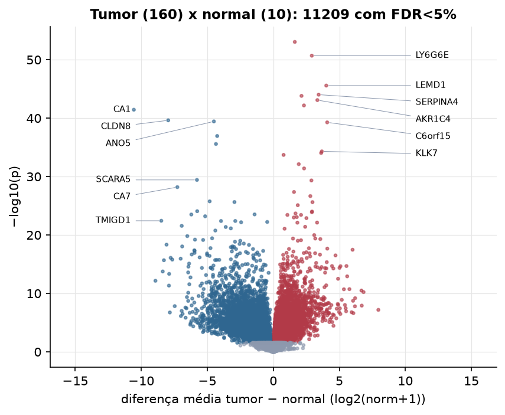
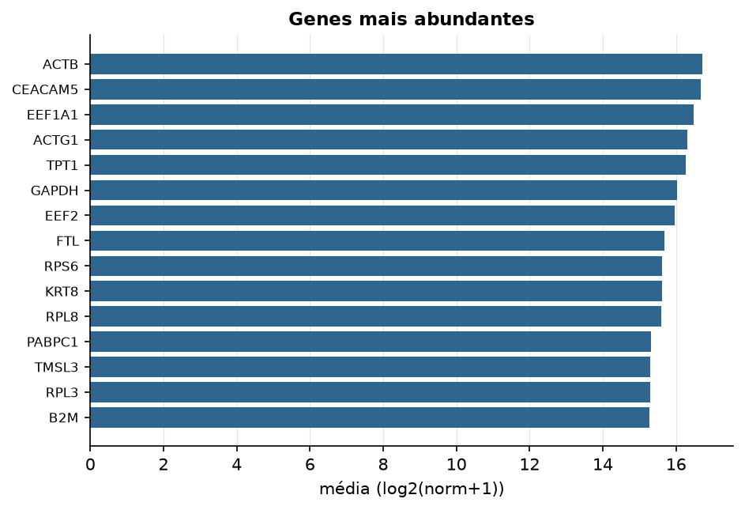

READ · RNA-seq (PanCanAtlas)
Illumina HiSeq, RSEM normalizado e corrigido por lote (EB++), log2(x+1) · gerado em 22/10/2026 03:26
20.531genes
160amostras tumorais
10amostras normais
5,7%valores faltantes
Fonte: PanCanAtlas EB++ via API do Xena
Estes valores já vêm normalizados e com correção de lote entre plataformas e centros. Servem bem para modelos gaussianos ou redes neurais; para um modelo de contagem use as contagens brutas do GDC.
Principais resultados
- 20.531 genes medidos em 170 amostras (160 tumorais e 10 normais); 5,7% dos valores estão faltando.
- Os dois primeiros componentes principais explicam 17,2% e 8,7% da variância das features mais variáveis.
- Correlação mediana entre amostras: 0,64.
- Amostras com correlação muito abaixo das demais (possíveis outliers técnicos): TCGA-G5-6572-02.
- Tumor x normal: 11209 genes diferentes com FDR < 5% (5206 maiores no tumor, 6003 maiores no normal; 9 pacientes têm o par tumor-normal).
- Mais aumentados no tumor: DVWA, LY6G6E, LEMD1, SERPINA4, KIAA1751, AKR1C4, LY6G6F, C6orf15.
- Mais reduzidos no tumor: CA1, CLDN8, ANO5, CP, DPP10, SCARA5, CA7, UGT1A8.
- Associações clínicas com p < 0,05 nos componentes principais: PC1 com estádio (p=0.043).
- Em mediana, 80,0% dos genes têm expressão acima de log2(norm+1)=1 em cada amostra.
Distribuição dos valores


Estrutura das amostras




Tumor x normal

Features mais diferentes entre tumor e normal
| diferenca_tumor_menos_normal | t | p | fdr | |
|---|---|---|---|---|
| DVWA | 1.628 | 23.581 | 8.83e-54 | 1.76e-49 |
| LY6G6E | 2.915 | 22.56 | 2.01e-51 | 2e-47 |
| LEMD1 | 4.013 | 21.508 | 2.64e-46 | 1.75e-42 |
| SERPINA4 | 3.433 | 19.458 | 9.42e-45 | 4.69e-41 |
| KIAA1751 | 2.136 | 19.711 | 1.52e-44 | 6.06e-41 |
| AKR1C4 | 3.337 | 19.421 | 8.06e-44 | 2.67e-40 |
| LY6G6F | 2.32 | 19.17 | 6.64e-43 | 1.89e-39 |
| CA1 | -10.564 | -23.757 | 3.6e-42 | 8.96e-39 |
| CLDN8 | -7.961 | -26.226 | 2.34e-40 | 5.16e-37 |
| ANO5 | -4.501 | -24.464 | 3.63e-40 | 7.22e-37 |
| C6orf15 | 4.08 | 17.925 | 5.2e-40 | 9.41e-37 |
| CP | -4.252 | -20.35 | 1.13e-37 | 1.88e-34 |
| DPP10 | -4.344 | -18.258 | 2.62e-36 | 4e-33 |
| KLK7 | 3.673 | 16.24 | 4.87e-35 | 6.92e-32 |
| KLK8 | 3.622 | 15.933 | 9.12e-35 | 1.21e-31 |
| COPS7B | 0.778 | 22.362 | 1.94e-34 | 2.42e-31 |
| LOC84931 | 1.928 | 15.223 | 7.4e-33 | 8.66e-30 |
| SOX14 | 2.331 | 14.952 | 3.99e-32 | 4.4e-29 |
| SCARA5 | -5.783 | -27.074 | 3.71e-30 | 3.88e-27 |
| KRT75 | 2.887 | 14.632 | 4.61e-30 | 4.58e-27 |
| CA7 | -7.269 | -34.7 | 6.38e-29 | 6.04e-26 |
| ZNF280A | 1.567 | 13.474 | 4.33e-28 | 3.92e-25 |
| DMBX1 | 2.804 | 15.062 | 2.18e-27 | 1.88e-24 |
| UGT1A8 | -4.82 | -17.335 | 1.72e-26 | 1.43e-23 |
| LHFPL4 | -2.943 | -15.016 | 2.31e-26 | 1.83e-23 |
| CYP24A1 | 2.966 | 15.221 | 2.4e-26 | 1.83e-23 |
| GNGT1 | 1.853 | 14.519 | 7.91e-26 | 5.83e-23 |
| SI | -5.765 | -14.276 | 8.41e-25 | 5.97e-22 |
| CELSR3 | 2.933 | 25.501 | 9.51e-25 | 6.52e-22 |
| FEZF1 | 2.921 | 12.458 | 1.25e-24 | 8.27e-22 |
Associação com variáveis clínicas
p-valores da associação dos três primeiros componentes principais (só tumores) com estádio (Kruskal-Wallis), sexo (Mann-Whitney), idade (Spearman) e sobrevida global (Cox univariado).
| estádio (Kruskal) | sexo (Mann-Whitney) | idade (Spearman) | sobrevida OS (Cox) | |
|---|---|---|---|---|
| PC1 (13,7%) | 0.043 | 0.864 | 0.335 | 0.144 |
| PC2 (7,2%) | 0.854 | 0.451 | 0.073 | 0.234 |
| PC3 (4,9%) | 0.435 | 0.421 | 0.103 | 0.483 |
Mais abundantes
